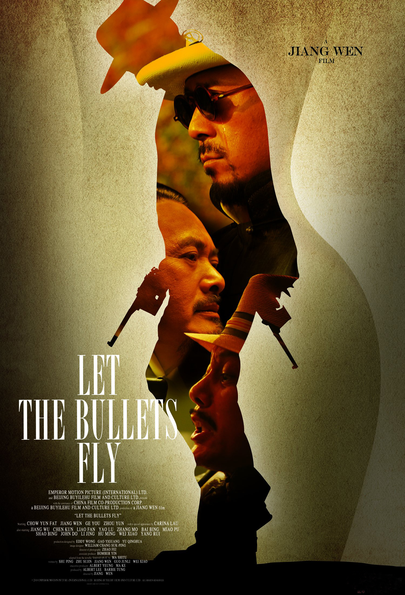

让子弹飞

概况
导演: 姜文
编剧: 朱苏进 / 述平 / 姜文 / 郭俊立 / 危笑 / 更多...
主演: 姜文 / 葛优 / 周润发 / 刘嘉玲 / 陈坤 / 更多...
类型: 剧情 / 喜剧 / 动作 / 西部
制片国家/地区: 中国大陆 / 中国香港
语言: 汉语普通话 / 四川话 / 山西话
上映日期: 2010-12-16(中国大陆)
片长: 132分钟
又名: 让子弹飞一会儿 / 火烧云 / Let The Bullets Fly
剧情简介
民国年间，花钱捐得县长的马邦德（葛优 饰）携妻（刘嘉玲 饰）及随从走马上任。途经南国某地，遭劫匪张麻子（姜文 饰）一伙伏击，随从尽死，只夫妻二人侥幸活命。马为保命，谎称自己是县长的汤 师爷。为汤师爷许下的财富所动，张麻子摇身一变化身县长，带着手下赶赴鹅城上任。有道是天高皇帝远，鹅城地处偏僻，一方霸主黄四郎（周润发 饰）只手遮天，全然不将这个新来的县长放在眼里。张麻子痛打了黄的武教头（姜武 饰），黄则设计害死张的义子小六（张默 饰）。原本只想赚钱的马邦德，怎么也想不到竟会被卷入这场土匪和恶霸的角力之中。鹅城上空愁云密布，血雨腥风在所难免……本片根据马识途的小说《夜谭十记》中的《盗官记》一章改编。